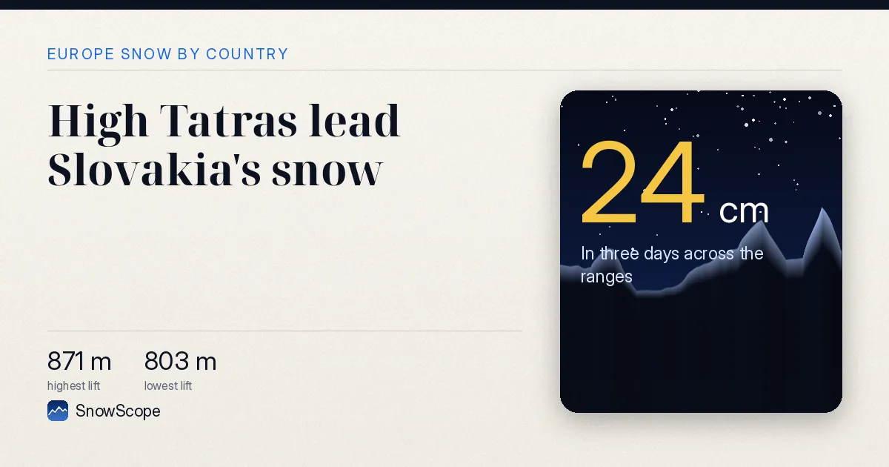
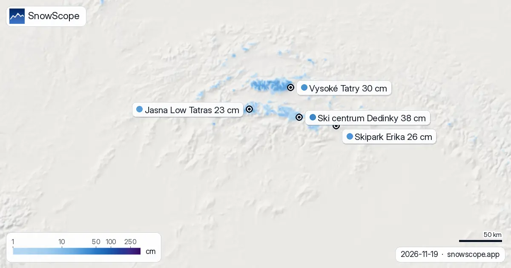
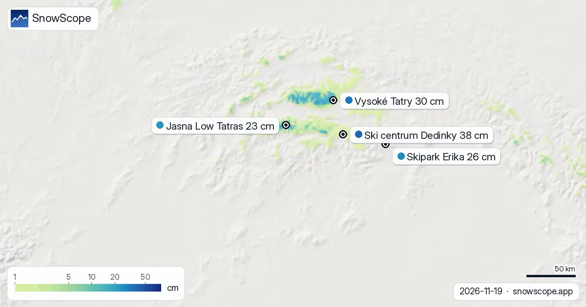

High Tatras lead Slovakia's snow: 24 cm in three days across the ranges
The past three days brought 16 cm to Slovakia's highest slopes, but the snow fell in distinct bands by altitude and range. The High Tatras and Low Tatras each caught 24 cm in 72 hours, while the lower Malá Fatra recorded 14 cm—a pattern that tells us where to look and where to avoid.
See the live snow forecast for Ski centrum Dedinky in the SnowScope appSnow depth, powder alerts and the 3D map, free.
Where the snow landed: mountains, not valleys
When I look at the past three days' snow across Slovakia, the story is clear: altitude sorted the winners from the losers. The High Tatras and Low Tatras both picked up 24 cm. These are the country's crown ranges, rising above 2000 m where the air is wet and cold enough to hold snow. Malá Fatra, lower and further west, received 14 cm—still useful, but half what fell on the highest peaks.
Below 1200 m, the snow line, almost nothing stuck. Ski centrum Dedinky sits at 871 m and saw just 1 cm in 72 hours, despite holding 38 cm on the ground from earlier weather. The lesson: if you are chasing fresh snow in Slovakia right now, you must go high. The mountains above 1500 m are white; the foothills are still mostly bare.
| Resort | Snow depth | New snow, 72 h | Coming, next days | Top |
|---|---|---|---|---|
| Ski centrum Dedinky | 38 cm | 1 cm | 0 cm | 871 m |
| Vysoké Tatry | 30 cm | 20 cm | 7 cm | 2,182 m |
| Skipark Erika | 26 cm | 1 cm | 2 cm | 1,204 m |
| Jasna Low Tatras | 23 cm | 24 cm | 9 cm | 2,003 m |
| Roháče | 23 cm | 15 cm | 9 cm | 1,496 m |

Three days of new snow, mapped by height
Our snow model shows the depth of snow at different altitudes across the 18,610 square kilometres we track. Between 1500 and 2000 m, mean depth is now 16 cm, and every slope is covered. Above 2000 m, depth rises to 27 cm on average, and coverage is complete. This fresh snow sits on older layers—the snowpack at the highest elevations is building steadily.
Only 680 square kilometres of Slovakia saw 5 cm or more of new snow in the past three days. That is a narrow band: mainly above 1500 m in the High Tatras, Low Tatras, and parts of Malá Fatra. The rest of the country, including mid-altitude slopes, received less. This uneven pattern is typical of November in the high ranges. Cold air masses collide over the peaks; valleys stay dry.

Highest peaks lead; lower resorts lag
Vysoké Tatry, which tops out at 2182 m, now holds 30 cm and gained 20 cm in three days. Jasna Low Tatras, reaching 2003 m, holds 23 cm and added 24 cm—the most dramatic gain in the tracked resorts. Both are primed for the next seven days, when our model forecasts up to 18 cm more. Roháče, at 1496 m, recorded 23 cm depth with 15 cm new snow, also solid.
Ski centrum Dedinky and Skipark Erika, both below 1200 m, hold 38 cm and 26 cm respectively, but neither has seen meaningful fresh snow recently. Their reserves come from earlier storms. If November snow stays high, as our model suggests, these lower resorts will struggle to stay relevant until a warmer spell dumps snow down to 1000 m or below.
What we expect next: more snow at the top
Over the next three days, our model shows up to 7 cm arriving. The High Tatras and Low Tatras should capture most of it. By 26 November, a single day may bring 10 cm to the highest peaks. Looking forward seven days, the total forecast reaches 18 cm at altitude—solid accumulation for late November.
The first substantial snow for many lower slopes comes on 20 November—just one day away—but it will be light. If you want depth and reliable cover, stay high and stay patient. The best snow-building window opens around 26 November.
Trend and outlook
Over the past four days, Slovakia's white area shrunk from 2340 square kilometres to 2010 square kilometres today, even as the High Tatras and Low Tatras accumulated fresh snow. This means lower elevations lost snow faster than the peaks gained it—a sign of fluctuating temperatures near 0°C at mid-altitude. The snow is consolidating at the top.
Looking beyond this week, the second week of the forecast (27 November to 3 December) brings up to 11 cm more. Slovakia's ski season is building, but it remains a high-mountain game. Everything hinges on whether the cold holds.
Reading the altitude bands
The model's depth profile shows the stark difference between elevations. From 500 to 1000 m, mean snow is zero; from 1000 to 1500 m, it is 2 cm with just 42 per cent cover. Jump to 1500–2000 m: 16 cm, 100 per cent cover. At 2000–2500 m: 27 cm, complete coverage. This is mountain snow in its purest form—a vertical wall of white high above the green foothills. It is why the High Tatras and Low Tatras are the only resorts worth watching in Slovakia this week.
Tips for skiers
- Drive to Vysoké Tatry or Jasna Low Tatras above 1500 m. Fresh snow is there; lower resorts have almost none.
- Expect 18 cm more snow by late November at altitude. Plan your visit from 26 November onward if you want depth.
- The snow line sits at 1200 m today. Anything below 1000 m is too low for reliable cover this week.
- Before going off-piste, check the official avalanche bulletin for the High Tatras and Low Tatras; fresh snow on steep slopes carries risk.
- Use the SnowScope app to monitor depth and forecast at your chosen resort height.
About these numbers
Resort snow depths are the deepest snow on the resort's upper slopes from the SnowScope snow model (about 1 km, run of 19 November); they are estimates for an area, not a measurement at one point. Station values are measurements on the date shown. Forecasts can change. Always read the official avalanche bulletin before going off-piste.
Cite this report
For research, teaching or the press: the numbers and charts are free to reuse under CC BY 4.0 with this citation.
SnowScope (2026), High Tatras lead Slovakia's snow: 24 cm in three days across the ranges, https://snowscope.app/blog/en/2026/11/slovakia-where-the-snow-fell-19-november-2026.html, accessed 2026-11-19
SnowScope (Atlas Labs). (2026, November 19). High Tatras lead Slovakia's snow: 24 cm in three days across the ranges. SnowScope snow reports. https://snowscope.app/blog/en/2026/11/slovakia-where-the-snow-fell-19-november-2026.html
BibTeX
@misc{snowscope2026slovakiawherethesnowfell,
author = {{SnowScope (Atlas Labs)}},
title = {High Tatras lead Slovakia's snow: 24 cm in three days across the ranges},
year = {2026},
month = nov,
howpublished = {\url{https://snowscope.app/blog/en/2026/11/slovakia-where-the-snow-fell-19-november-2026.html}},
note = {Published 2026-11-19 13:34 UTC; accessed 2026-11-19}
}· CC BY 4.0 · Methods, data and tools →
Ski centrum Dedinky: snow and temperature by height, this winter vs last (tools) →
Follow Ski centrum Dedinky
Free: a message when fresh snow is coming, and the forecast every morning.
More snow reports

From 13 to 19 November 2026 Slovenia got the most snow and kept it; Serbia and Croatia had a deep but short white weekend; Montenegro only on Durmitor; Bulgaria almost none. The ranking, with links to each country report.

Snow is falling on Slovenia's ski mountains today: about 37 cm on Kanin and 21 cm on Krvavec. Where the snow lies, how it compares with past winters, and the next snowy day.

Pick a region, dates, budget and what matters; get every resort ranked with the likely snow at the start, the pass, hotel and food per person, chalets to book, and a game mode.